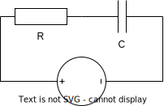
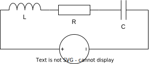

On a \(R=10\Omega\) ; \(C=40\)µF et \(u_G(t)=24\)V DC ; le condensateur est déchargé à t=0.
Circuit RC

En utilisant vos connaissances sur les équations différentielles, calculer \(q(t)\) et en déduire \(i(t)\) dans ce circuit.
En déduire la durée du régime transitoire (\(5\tau\)) et l'intensité dans le circuit une fois le régime permanent atteint.
Déterminer l'intensité moyenne durant le régime transitoire.
Déterminer le temps au bout duquel le condensateur est à moitié chargé.
**Reprendre l'exercice avec \(u_G(t)=240\sqrt{2}\sin(100\pi t)\) V (secteur).
2nd ordre : circuit RLC série
En utilisant vos connaissances sur les équations différentielles, calculer les solutions générales \(q(t)\) et en déduire \(i(t)\) dans ce circuit ; comparer la situation par rapport à l'exercice précédent.
Les 3 premières séries de valeurs sont théoriques, pour faciliter les calculs.
Circuit RLC

\(L=1\)H ; \(R=2\Omega\) ; \(C=1\)F et \(u_G(t)=24\)V DC
\(L=1\)H ; \(R=8\Omega\) ; \(C=\frac{1}{15}\)F et \(u_G(t)=24\)V DC
\(L=1\)H ; \(R=4\Omega\) ; \(C=\frac{1}{8}\)F et \(u_G(t)=24\)V DC
\(L=1\)mH ; \(R=10\Omega\) ; \(C=40\)µF et \(u_G(t)=24\)V DC
**Reprendre la question précédente avec \(u_G(t)=240\sqrt{2}\sin(100\pi t)\) V (secteur).
2nd ordre : circuit RLC série avec décharge d'un condensateur
On se place dans la situation où le condensateur est chargé à 50% (comme pour l'expérience 1). On le place dans le circuit ci-contre qui est fermé à t=0.
Circuit RLC
Écrire une équation différentielle vérifiée par ce circuit.
Est-il possible de produire des oscillations, et quelle est la méthode à suivre ?
Rappels
Formules d'électricité
On utilisera : \(u_L(t) = Li'(t) \) ; \(u_R(t) = Ri(t)\) ; \(u_C(t)=\frac{q(t)}{C}\) ; \(q'(t)=i(t)\).
On a aussi : \(\underline{Z}_L = L\omega j\) et \(\underline{Z}_C = \frac{1}{C\omega j}\)
Et aussi : \(\tau=\frac{1}{r}\) avec \(r\) solution de l'équation caractéristique.
Formules de résolution des équations différentielles homogènes
Solutions générales d'une équation homogène :
1er ordre : \((E^c)~:~~\) une solution \(r\), solution générale de \((E_1^*)\) : \(K\rm{e}^{rt}\).
2nd ordre : \((E^c)~:~~ar^2+br+c=0\) ; 3 cas selon \(\Delta=b^2-4ac\) :
\(\Delta>0\) : \((E^c)\) a deux solutions \(r_1=\dfrac{-b-\sqrt{\Delta}}{2a}\) et \(r_2=\dfrac{-b+\sqrt{\Delta}}{2a}\) ;
solution générale de \((E_2^*)\) : \(K\rm{e}^{r_1t}+L\rm{e}^{r_2t}\).
\(\Delta=0\) : \((E^c)\) a une solution \(r_0=\dfrac{-b}{2a}\) ;
solution générale de \((E_2^*)\) : \(K\rm{e}^{r_0t}+Lt\rm{e}^{r_0t}\).
\(\Delta<0\) : \((E^c)\) a deux solutions \(r_1=\dfrac{-b-i\sqrt{\Delta}}{2a}\) et \(r_2=\dfrac{-b+i\sqrt{\Delta}}{2a}\), complexes conjuguées de la forme \(\alpha\pm i\omega\) (on choisit \(\omega>0\)) ;
solution générale de \((E_2^*)\) : \(K\rm{e}^{\alpha t}\cos(\omega t)+L\rm{e}^{\alpha t}\sin(\omega t)\).